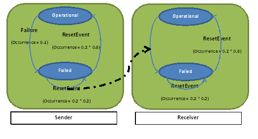

A Discrete Time Markov Chain (DTMC) uses probability values that represents fixed probability rate (the probability to go from one step to another). It corresponds to an fixed distribution pattern of probability, opposite to the exponential approach. For this reason, all error event occurrence in the Error Model shall be described using the Fixed Distribution Value, as shown below.
EMV2::OccurrenceDistribution => [ ProbabilityValue => 0.5 ; Distribution => Fixed;] applies to Failure;
In this previous example, it means that there is 50 percent of probability that the Failure event occurs.
In the following, we present how to generated DTMC model from an AADL model. The model is very basic, with one consumer and one producer. The consumer can propagate an error to the producer. The corresponding AADL instance model is shown below. So, each component has an error behavior state machine with one error propagation.

The following picture show the error state machine of each component. In particular, when the sender component is in a Failed state, it propagates the error to the receiver that goes itself to the Failed state. When being in the Failed state, each component may recover upon occurrence of the ResetEvent error event. However, in some case, the repair does not work at all and the component stay in an error state.
User an then import the generated PRISM model into the tool and start to simulate or make experiment with it. To help the user, some helper rewards are added to the PRISM model. For example, the steps reward (as shown below) aims at counting the number of steps made by the model.
rewards "steps" true : 1; endrewards
package em2_simple_propagation_composite
public
with EMV2;
system sender
features
outp : out event port;
end sender;
system implementation sender.i
annex EMV2 {**
use types ErrorLibrary;
use behavior ErrorModelLibrary::Simple;
error propagations
outp: out propagation {ServiceOmission};
flows
src: error source outp{ServiceOmission} when Failed;
end propagations;
component error behavior
events
ResetEvent: recover event;
transitions
tfail: Operational -[Failure ]-> Failed;
-- reset will be successful with 0.8 probability, and fail with 0.2 probability
treset: Failed -[ ResetEvent ]-> (Operational with 0.8, Failed with 0.2);
end component;
properties
EMV2::OccurrenceDistribution => [ ProbabilityValue => 0.1 ; Distribution => Fixed;] applies to Failure;
EMV2::OccurrenceDistribution => [ ProbabilityValue => 0.2 ; Distribution => Fixed;] applies to ResetEvent;
**};
end sender.i;
system receiver
features
inp : in event port;
end receiver;
system implementation receiver.i
annex EMV2 {**
use types ErrorLibrary;
use behavior ErrorModelLibrary::Simple;
error propagations
inp: in propagation {ServiceOmission};
end propagations;
component error behavior
events
FailEvent: error event;
ResetEvent: recover event;
transitions
tfail: Operational -[inp{ServiceOmission} ]-> Failed;
-- reset will be successful with 0.8 probability, and fail with 0.2 probability
treset: Failed -[ ResetEvent ]-> (Operational with 0.8, Failed with 0.2);
end component;
properties
EMV2::OccurrenceDistribution => [ ProbabilityValue => 0.2 ; Distribution => Fixed;] applies to ResetEvent;
**};
end receiver.i;
system main
end main;
system implementation main.i
subcomponents
snd : system sender.i;
rcv : system receiver.i;
connections
port snd.outp -> rcv.inp;
annex EMV2 {**
use behavior ErrorModelLibrary::Simple;
composite error behavior
states
[snd.Operational and rcv.Operational]-> Operational;
[snd.Failed or rcv.Failed]-> Failed;
end composite;
**};
end main.i;
end em2_simple_propagation_composite;